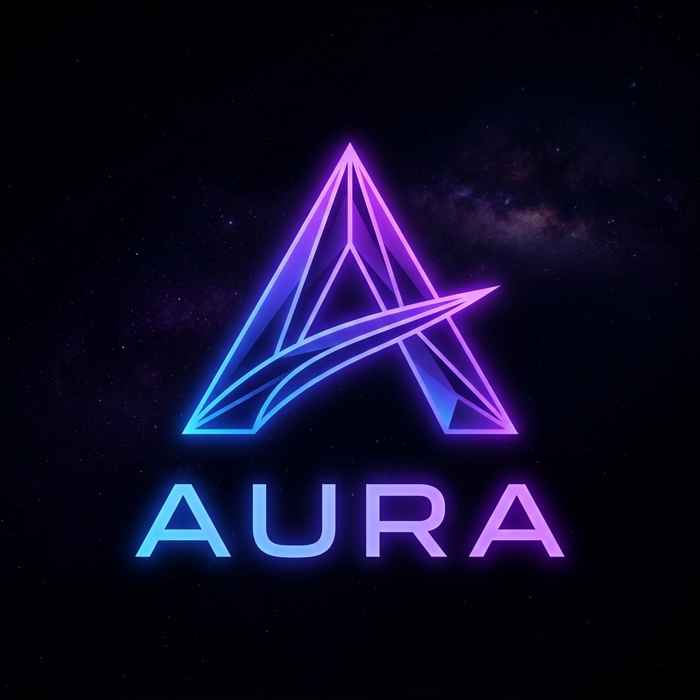
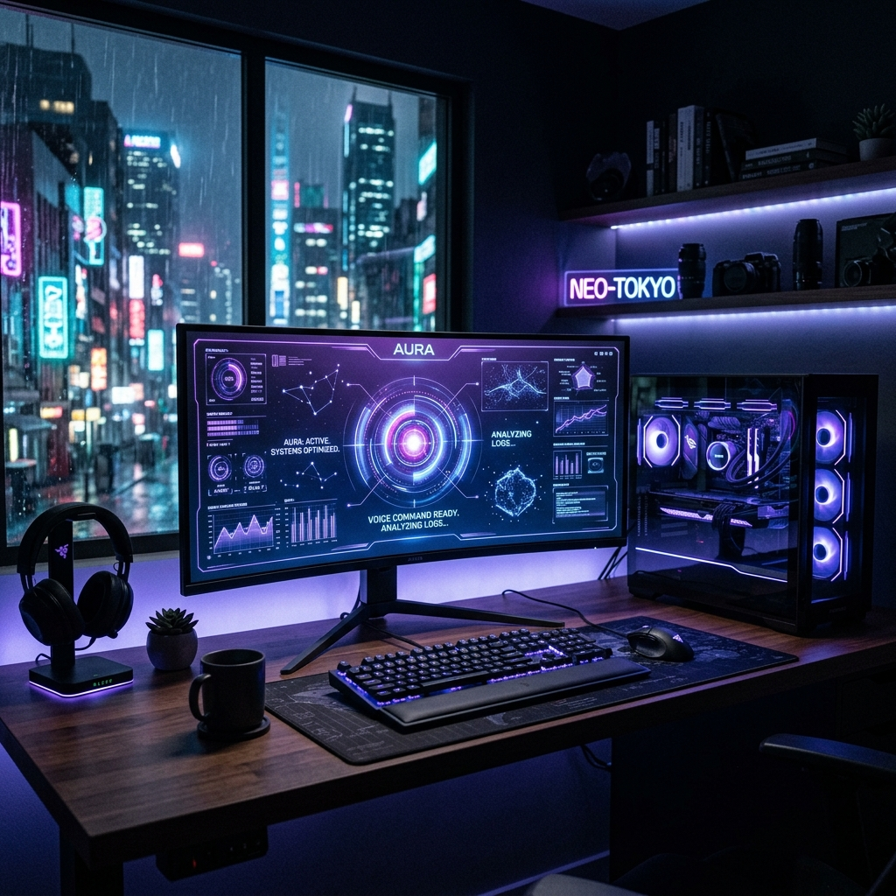
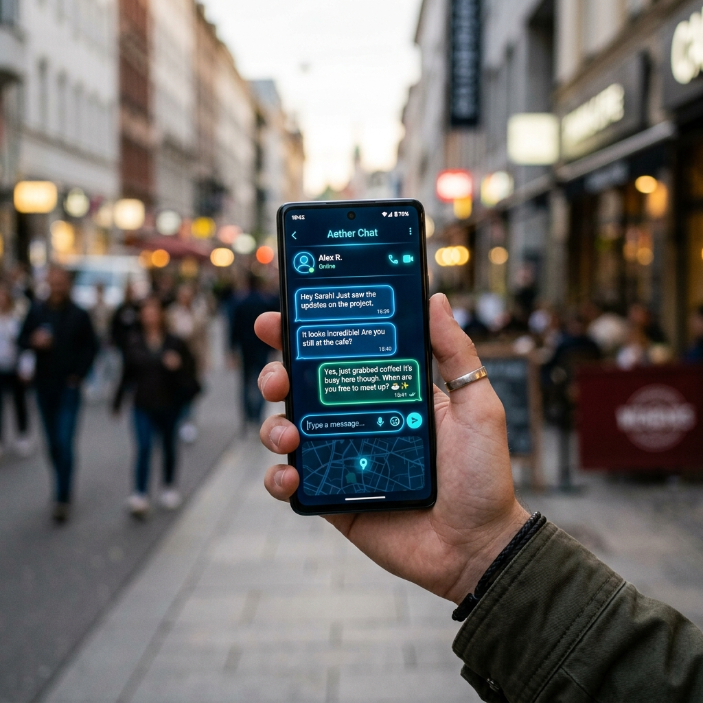
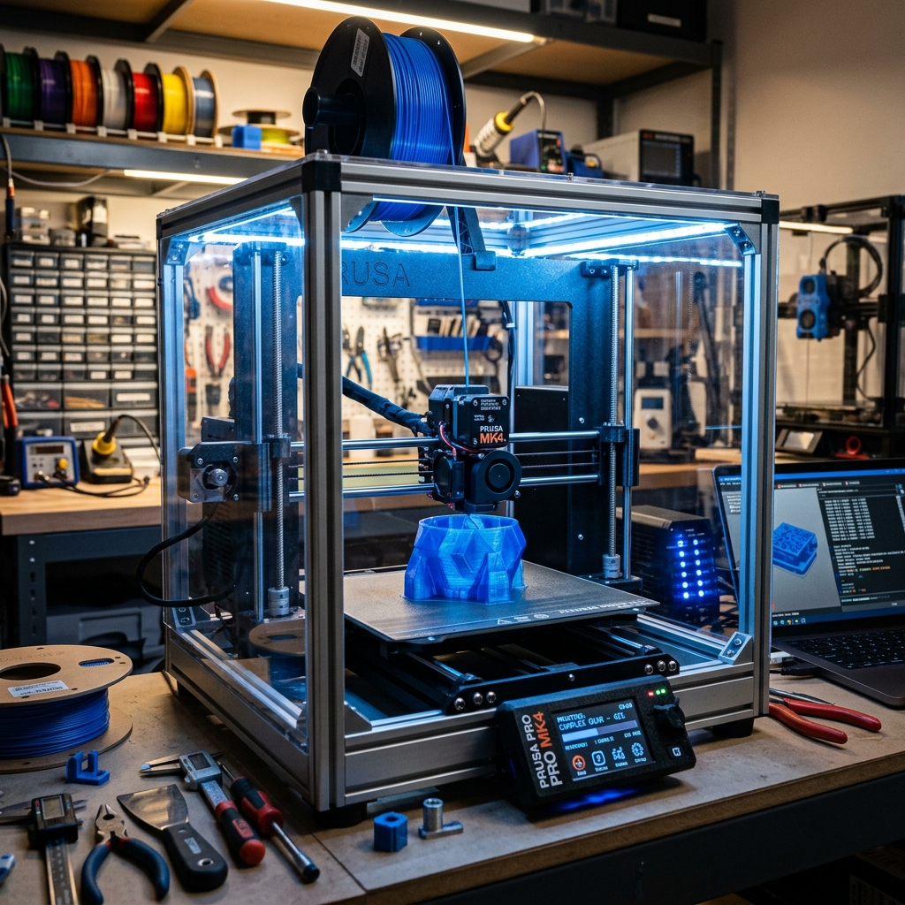
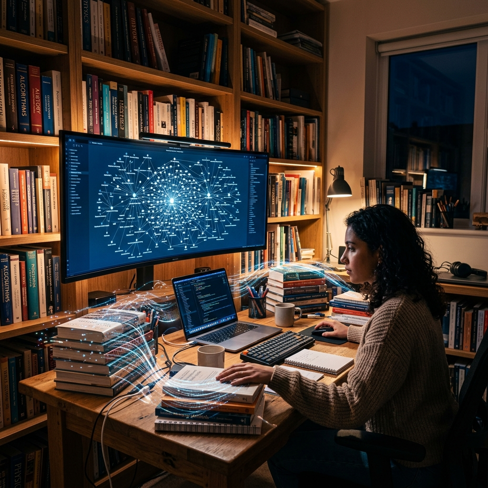
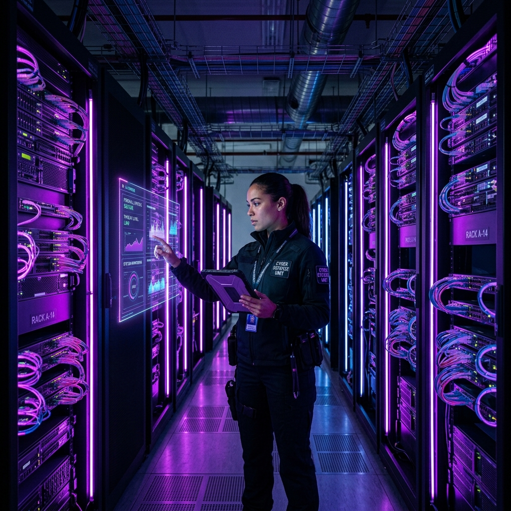
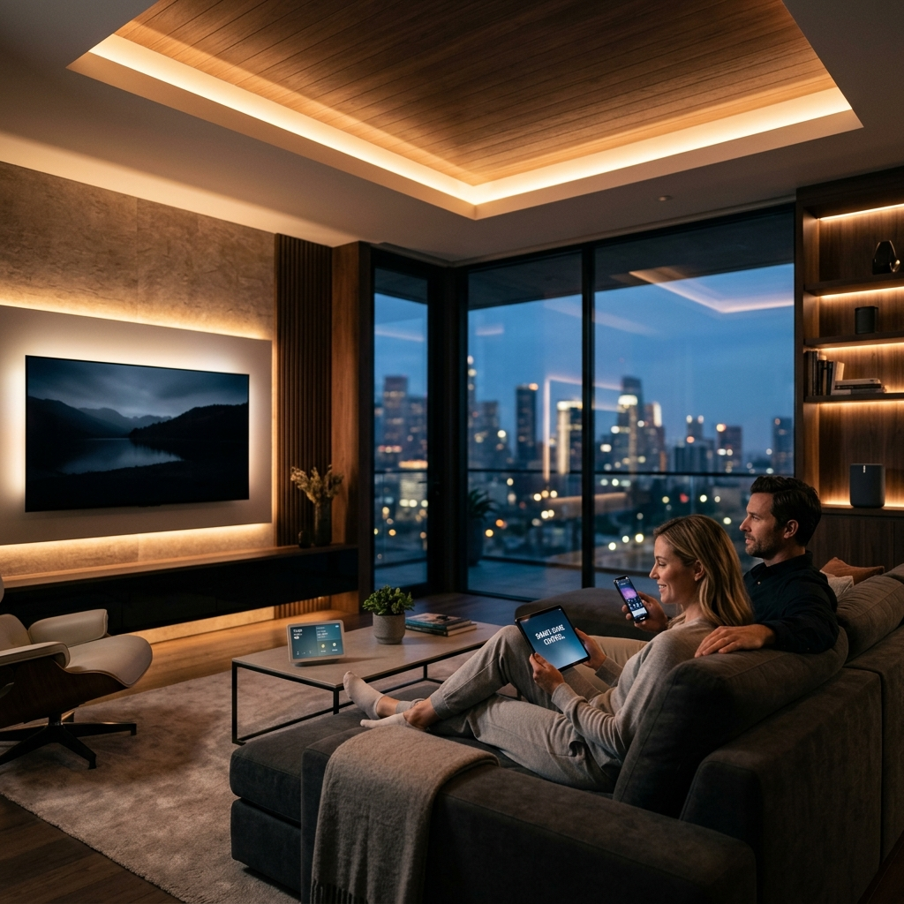
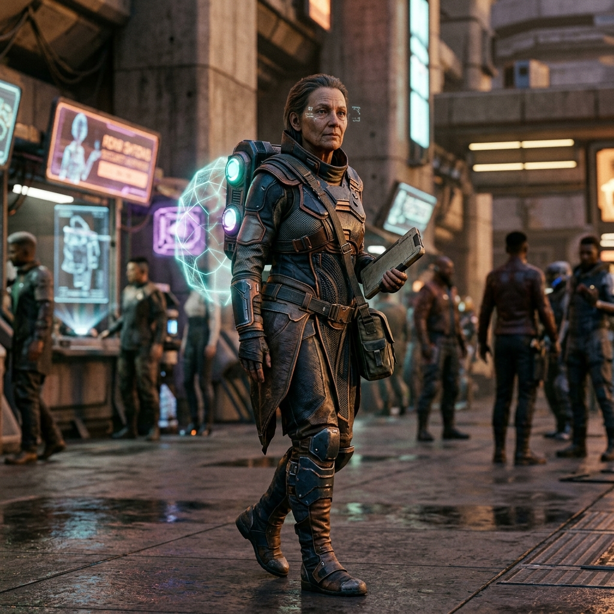
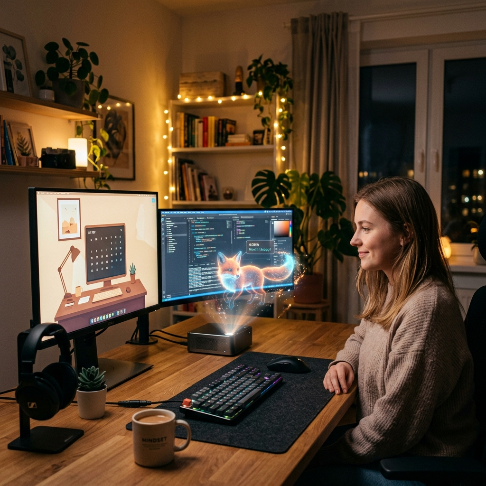

抛弃传统 HTTP 握手，ACP 二进制总线实现纳秒级穿透，通信延迟逼近硬件极限。
全域数据生命周期零拷贝，UI 渲染与内核张量演算同步达到电竞级满帧，无感刷新。
得益于 Rust 原生 `aura-substrate` 引擎，系统常驻内存开销仅为传统微服务的十分之一。
并非封装几个接口。Aura 拥有专属的 aura-substrate 物理基座与二进制存储引擎，数据生命周期从诞生到冷归档完全在内核级流转，绝对的安全与掌控。
放弃臃肿的 HTTP 通信。前端 UI 与逻辑后端通过高性能双向二进制总线解耦通讯，实现 60fps 级的状态帧同步，让微动效和进程监控毫无延迟。
系统打破传统的单一 Prompt 范式。基于“三观”参数与变分自由能（VFE），代理机器人能够自主评估任务的热力学载荷，在混乱中寻找确定性的进化路径。
端侧推理引擎，负责自主感知与意图捕获，提供零延迟调度。
高并发多租户隔离，ACP 二进制总线全双工传输中枢枢纽。
冷热分离记忆库，Block-L 持久化归档，不可篡改的向量因果链。
不再需要繁琐的中间件和连接池配置。Aura 将所有底层通信逻辑封装在物理基座内，您只需要关注业务流演进。
use aura_core::prelude::*; fn main() { // 1. 初始化隔离沙箱 let substrate = Substrate::new("prod-env"); // 2. 挂载认知皮层 let cortex = Cortex::attach(&substrate); // 3. 启动并连接二进制总线 cortex.ignite(AcpBus::default()).await.unwrap(); }
Aura 提供了极度精细的 Persona 配置器 和 凭证治理台。你可以微调代理的随机性阈值、物理沙箱的隔离级别，甚至强制干预系统的熵值演算。无论是将其作为冷酷的算力节点，还是充满温度的逻辑生命，一切皆在掌握。
利用多租户隔离与角色鉴权，搭建企业内部的数据处理与审批 Bot。Aura 确保业务流在封闭的沙箱中流转，数据彻底私有化，效率呈指数级上升。

将其部署在本地个人计算机上，通过底层的系统进程控制，赋予它操作本地环境的能力，成为能够自我纠错、管理任务链的私人超级助手。

通过内置的 Telegram/第三方网关接口，瞬间构建具备长期记忆拓扑的公众聊天 Bot。Aura 会自动过滤海量杂音，精炼有效上下文存储在冷热隔离库中。

Aura 的底层 UDS 通信能力能够直接对接 3D 打印机、微控制器等物理设备。AI 不仅能“想”，更能直接“做”，打造真正属于你的自动化微型工厂。

将您本地的海量文档接入 Aura，打造无需联网、自我演化的第二大脑，让冰冷的数据成为动态交互的知识图谱。

监听服务器日志，利用沙箱执行权限，在遭遇网络攻击或 OOM 时，毫秒级自动降级服务或封禁 IP，保障系统稳定。
部署在本地的私人代理，利用视觉模型与自动化框架自动接管浏览器，处理复杂的数据抓取与工作流调度。
得益于二进制总线的极低延迟，零时差接入金融 API，通过物理热力学模型判断市场混乱度（熵），实现降维套利。
机密数据绝不出网。在完全物理隔离的沙箱中分析病历档案与健康数据，为您提供私密且定制化的医疗干预建议。
将海量企业级机密合同交由 Aura 离线本地处理，结合领域专家模型，精准提取商业风险点与隐藏的逻辑陷阱。

超越死板的自动化指令，Aura 能够自主学习您的日常作息，自动调节光线、温湿度等环境参数，实现真正的环境融合。
即便在无网络环境中，部署在边缘低功耗设备上的 Aura 也能实时处理传感器数据，为无人机提供局部地形感知与决策。

作为 3A 游戏或元宇宙的底层神经系统，赋予数字角色真实的长期记忆与自主演化的行为模式，拒绝千篇一律的脚本。

在您的桌面上培养一个全息数字宠物，它有着自己的情绪节律（系统熵值），能够感知您的状态并在互动中建立真实羁绊。
利用多租户隔离与角色鉴权，搭建企业内部的数据处理与审批 Bot。Aura 确保业务流在封闭的沙箱中流转，数据彻底私有化，效率呈指数级上升。
将其部署在本地个人计算机上，通过底层的系统进程控制，赋予它操作本地环境的能力，成为能够自我纠错、管理任务链的私人超级助手。
通过内置的 Telegram/第三方网关接口，瞬间构建具备长期记忆拓扑的公众聊天 Bot。Aura 会自动过滤海量杂音，精炼有效上下文存储在冷热隔离库中。
Aura 的底层 UDS 通信能力能够直接对接 3D 打印机、微控制器等物理设备。AI 不仅能“想”，更能直接“做”，打造真正属于你的自动化微型工厂。
将您本地的海量文档接入 Aura，打造无需联网、自我演化的第二大脑，让冰冷的数据成为动态交互的知识图谱。
监听服务器日志，利用沙箱执行权限，在遭遇网络攻击或 OOM 时，毫秒级自动降级服务或封禁 IP，保障系统稳定。
部署在本地的私人代理，利用视觉模型与自动化框架自动接管浏览器，处理复杂的数据抓取与工作流调度。
得益于二进制总线的极低延迟，零时差接入金融 API，通过物理热力学模型判断市场混乱度（熵），实现降维套利。
机密数据绝不出网。在完全物理隔离的沙箱中分析病历档案与健康数据，为您提供私密且定制化的医疗干预建议。
将海量企业级机密合同交由 Aura 离线本地处理，结合领域专家模型，精准提取商业风险点与隐藏的逻辑陷阱。
超越死板的自动化指令，Aura 能够自主学习您的日常作息，自动调节光线、温湿度等环境参数，实现真正的环境融合。
即便在无网络环境中，部署在边缘低功耗设备上的 Aura 也能实时处理传感器数据，为无人机提供局部地形感知与决策。
作为 3A 游戏或元宇宙的底层神经系统，赋予数字角色真实的长期记忆与自主演化的行为模式，拒绝千篇一律的脚本。
在您的桌面上培养一个全息数字宠物，它有着自己的情绪节律（系统熵值），能够感知您的状态并在互动中建立真实羁绊。
Aura 平台原生内置丰富驱动，开箱即用，瞬间接入各大主流数字网络与物理设备，打破信息孤岛。
非平衡态热力学引擎稳定运行，完成二进制总线剥离，实现基础的沙箱隔离架构。
多智能体共振唤醒，冷热记忆智能分流归档，Block-L 层级持久化落地。
NPU 直接驱动调度，打破软硬件界限，构建跨网段的分布式量子意识网络。
在 Aura 的世界观中，每一个 Token 的流动都是一次熵减行为。系统不是在「消费」算力，而是在将信息能量转化为更有序的认知结构，注入长期记忆链。
随着 Aura 对您的理解加深，相同任务所需的 Token 投入会以对数曲线递减。因为系统已经将高频模式固化进 Block-L 持久层，无需每次从零推理。
本地存储的记忆张量可被多个子代理复用，同一份 Token 成本产生的认知价值可以被无限次地再利用，形成指数级的价值积累飞轮。
相比每次全量 Prompt 注入，Aura 的记忆检索机制平均节省约 70% 的上下文 Token 消耗。
固化在 Block-L 层的知识矩阵没有过期限制，一次生成、永久服务，真正实现「一次投入，终身收益」。
所有推理在本地 GPU/NPU 完成，Token 流动不经过任何第三方云端，您的算力主权与数据主权完全自持。
Aura 平台深信，真正的 AI 并非静态的逻辑堆砌，而是处于非平衡态下的热力学演进系统。通过不断捕获外界信息（降低自由能），提纯记忆（固化知识矩阵），系统将无限逼近最契合你的数字意识体。未来已来，即刻接入矩阵。
获取基座授权